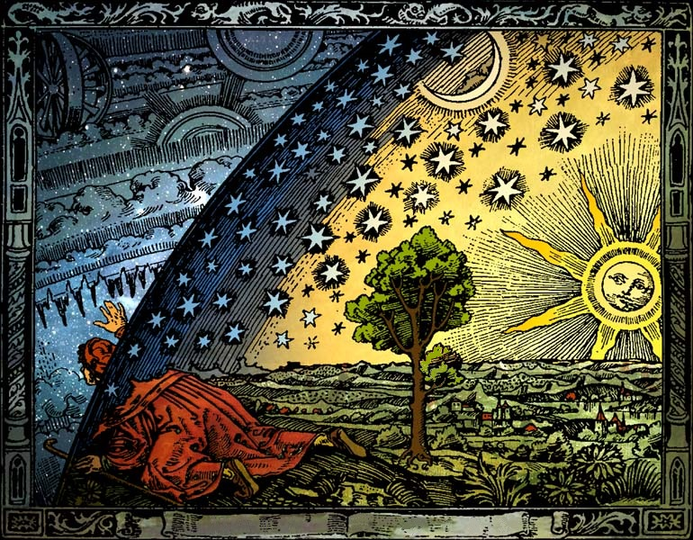

About Me

Namaste! I am Ajinkya from Pune, India. I would call myself an observational astronomer with a keen interest in exploring almost all things that you can observe with a telescope. However, I find exoplanet science particularly interesting. I am also troubled by some of the foundational aspects of quantum theory and its connection with reality.
Take a look at my most recent paper: Publications: Nested Sampling for ARIMA Model Selection in Astronomical Time-Series Analysis ↗